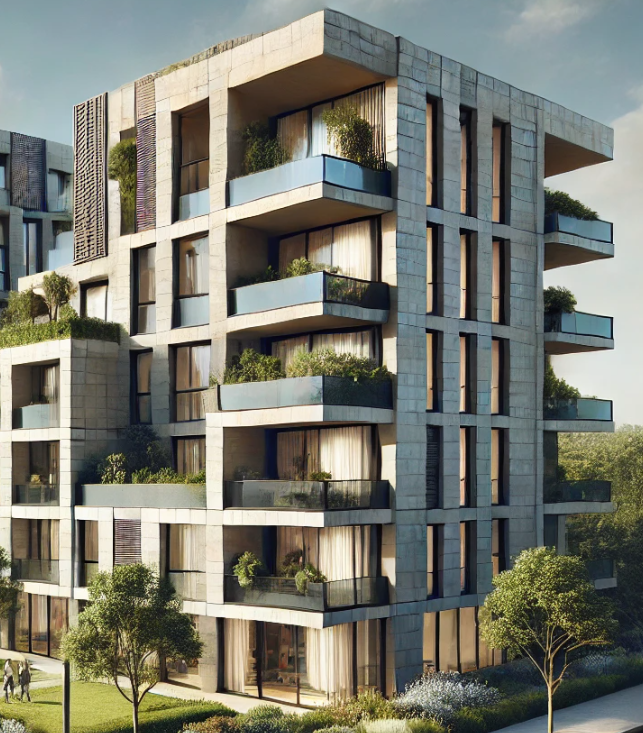
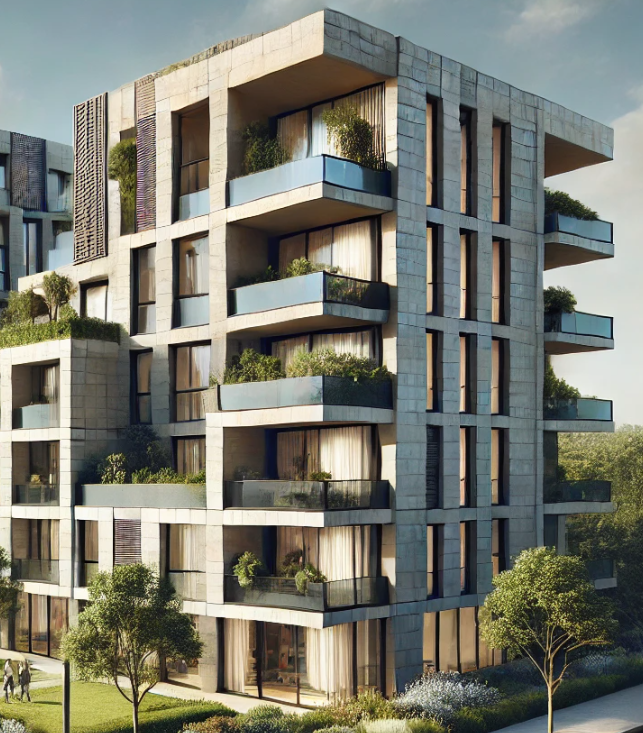
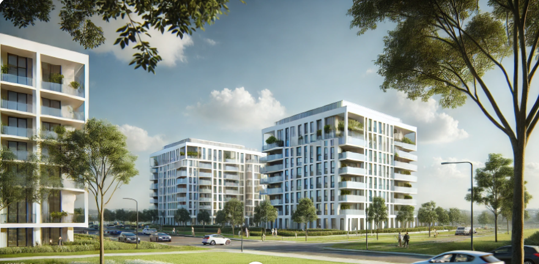
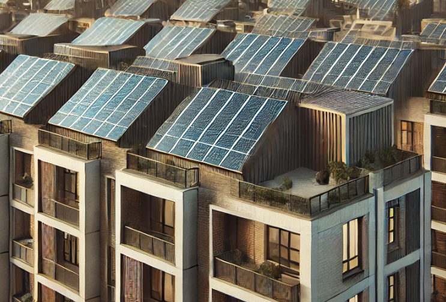

Proyecto 22 vivi Urduliz: En el proyecto de 22 Viviendas en Urduliz, Bizkaia, llevamos a cabo la instalación integral de los sistemas eléctricos y de telecomunicaciones, abarcando tanto las viviendas como las zonas comunes y el garaje.
En Montajes Eléctricos Electroled, ofrecemos una amplia gama de servicios especializados en instalaciones eléctricas y de telecomunicaciones, adaptados a las necesidades de cada proyecto. Nuestros servicios incluyen:
Proyecto 22 vivi Urduliz: En el proyecto de 22 Viviendas en Urduliz, Bizkaia, llevamos a cabo la instalación integral de los sistemas eléctricos y de telecomunicaciones, abarcando tanto las viviendas como las zonas comunes y el garaje.
Proyecto 40+36 viviendas Bernago: Englobamos dos proyectos donde nos hemos encargado de toda la instalación eléctrica del mismo.Englobamos dos proyectos donde nos hemos encargado de toda la instalación eléctrica del mismo.
Proyyecto 72 vivi Zorrozaurre: Actualmente, uno de los proyectos en desarrollo más destacados es "72 Viviendas en Zorrozaurre, Bilbao", una obra de gran envergadura que forma parte de un complejo residencial de 160 viviendas. Además, 9 de las viviendas cuentan con sistemas de domótica, que permiten a los residentes controlar la iluminación, la climatización y otros dispositivos de forma remota, garantizando un hogar más cómodo y conectado. Este proyecto combina tecnología, eficiencia y sostenibilidad, posicionándose como un referente en la construcción moderna de la región. Se estima que finalizara al principios de 2025.

Proyecto 26 viviendas Durango: En el proyecto de 26 Viviendas en Durango, se llevó a cabo una instalación integral que incluyó la implementación de placas solares en la cubierta, fomentando la sostenibilidad y el aprovechamiento de energías renovables. Este sistema asegura una mayor eficiencia energética para las zonas comunes y los servicios compartidos del edificio. El proyecto también abarcó la instalación eléctrica y de telecomunicaciones en las zonas comunes, garaje y viviendas, asegurando un diseño funcional y seguro que cumple con los estándares más exigentes. Se priorizó la eficiencia energética, integrando iluminación LED y sistemas avanzados en todas las áreas.
